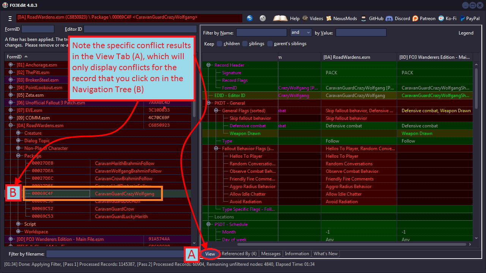

4. Conflict Detection and Resolution
4.1 Overview
One of the primary roles of xEdit is for conflict detection and resolution, so that multiple mods that modify the same records can work together successfully. Conflicts and Overrides are not always bad, and in fact the entire idea of "modding" is to make changes to the game that replace (and thus create a conflict or override for) the original records that came with Fallout3. That is why our goal is to detect conflicts, determine their nature and resolve the bad conflicts while leaving good changes in place.
The name of the game with Conflicts Resolution is load order, as Fallout3 will count the last record loaded as the winner of any conflict between files. For example, two mods are added to the load order; ModA and ModB. ModA changes the color of a standard lantern from a Neutral color to a Warmer color. ModB changes the radius of the same lantern by 50%, making it brighter. If ModA loads before ModB, the changes made to the lantern by ModA get over-written by ModB (which still thinks the lantern has a Neutral color). This is a bad conflict, and overcoming them is the focus of this chapter.
Negative or bad conflicts can also occur when mods make radical changes to the same world cell as the example below shows, while others can result in missing references, features in-game and even game crashes. The picture below is a poster-child example of how mods can fight over the same space and result in a bad change to the game:
Some conflicts are very apparent in-game such as in the example above, while others are hidden and only reveal themselves via crashes or when mods don't work right. In the worst case scenario Fallout3 will crash more often, sometimes constantly. These are the conflicts that we need to detect and resolve, while leaving the bulk of the good/intended conflicts and overrides left un-changed. We discuss the process in depth below.
4.2 Differences between Conflicts and Overrides
There is a huge difference between a "conflict" and an "override". There are mods which override changes from a master file, such as changing the level cap. If for example, ModA changes the level cap to 40 from the default, this over-rides the level 20 cap in the Fallout3 master files and is a normal. Overrides are not conflicting in any way. Overrides show up in xEdit with a Yellow background color and Green text color. In most cases you don't need to do anything with Overrides.
To get a conflict you need to have the same FormID defined in at least 3 modules, a master, and 2 overrides. The conflict arises when the two overrides change different aspects of the same record, so that when the mods are loaded by Fallout3, the last-mod loaded overrides the changes of the first-mod. Thus the last loaded mod is the, "Conflict Winner" while the first mod, whose changes were overridden, is the, "Conflict Loser". Conflict Losers will show up with a red background, red text. The screenshot below illustrates the differences as seen in xEdit:
In all this it's important to say, it's perfectly possible for 10 modules to override the same record without a single conflict, as long as the last loaded version of that record includes all the changes from the 10 other modules. That's what creating Patch Plugins is all about, and the process starts with applying a Filter.
4.3 Applying Conflict Filters
The application of Filters is the primary means of conflict detection for xEdit. When you apply a filter, the loaded mod data in xEdit is parsed and analyzed via a complex algorithm (described below) to detect all conflicts and overrides. The list of mods in the Navigation treeview changes color (text and background) based on conflict status of each, and the results are shown in the View Tab which also changes color (text and background). The color scheme matches throughout xEdit, so you won't have to memorize more than one (described in detail below).
To begin, Right-click in the Navigation treeview and select, "Apply Filter" as shown in Step 1 and 2 below:
The Filter window will now be presented, allowing you to check and un-check options according to the screenshot below (which are the settings for conflict detection).
In the example screenshot below of the Filter window, the options A-E are the Only options that should be checked, after which you can click, "Apply" (F) to start the filter.
Once you click on Filter (F), xEdit will filter and analyze all of the loaded mods against the conflict-detection algorithm. This may take some time depending on how many mods you have loaded and how robust your computer is. The progress is shown in the upper-right corner of xEdit as the screenshot below illustrates:
xEdit also keeps track of how long the filter takes to apply. If you run 100+ mods, it can take several minutes to process all of the data. Conflict detection is not simply based on the existence of multiple records for the same FormID in different modules but instead performs a comparison of the parsed sub-record data via an algorithm.
As such the conflict detection process requires a lot of memory, and systems with less than 2 Gigabytes of RAM may suffer. If you receive an, "Out of Memory" error, then your computer does not have enough memory to process the number of mods you have chosen. Upgrade your computer or reduce the number of mods you run.
The screenshot below illustrates how xEdit will look once the conflict detection process is complete. Note the [Filtering done] block in the Messages Tab below (A), indicating both the success of the conflict filtering process as well as record and time statistics about the filtration result. The screenshot below shows a typical outcome:

The mods-list in the Navigation treeview changes as the filter adjusts the text color and background color based on conflict status. The View Tab will show the actual conflicts, but only when you select on a record in the Navigation treeview as shown below:
With that you now understand how to detect for conflicts with xEdit and where to look at the data. You're now ready to learn about colors and display order. Understanding the color schemes behind the text and backgrounds is critical to understanding the conflicts, and how to resolve them.
4.4 Color Schemes and Display Order
Understanding the color scheme is key to understanding xEdit. The color coding scheme is designed to make the process as simple and efficient as possible. To open the Legen Window click the Legend button in the upper right corner. This provides an example color scheme, which is customizable from Options.
The same color scheme is used for the Navigation treeview as well as in the Right-Hand View Tab, which shows the actual conflicts. This is done for consistency, with the text/background color of the left-hand mod-list determined by the conflicts in the right-hand window. There are many cases in which the status shows a conflict has occurred (red background), but that no action needs to be taken.
There also is the case when a module contains a record that is identical to the master (which is usually un-intentional). If you have this module loaded alone the record will show up with a Green Background (signaling, no conflict) and Grey Text (identical to master). Named, "dirty edits", these can be purged with the Mod Cleaning Process.
The sample below shows both the color scheme and the display-order together to better illustrate how conflict detection works. xEdit displays each conflict in the order that the files are loaded ( FOMM's load order), with the first mod loaded listed on the Left (Purple) and the last mod loaded listed on the Right (Orange).

All conflicts are ordered this way, with any mods loaded in-between either in a conflict state (Red) or that is identical to the master (Grey) as described above. The Load Order Workflow chart below is designed to help you understand the different color-combinations that you will encounter when de-conflicting mods. The xEdit display order as shown above was transposed into the vertical diagram below to help better illustrate how xEdit determines conflict winners and losers:
As the chart above illustrates, the last-file loaded is always the conflict winner and ultimately determines what loads into Fallout3. In this example MMM and FWE both got lucky that the RoadWardens mod shared the same Flagging, or they would have been conflict losers to the Flagging set by RoadWardens. Not all of the mods were winners however, as BetterCaravans Flagging conflicted with RoadWardens and lost the Conflict, meaning the Essential and Respawn flags are not set in-game.
The FOIP (Fallout Interoperability Patch)was designed to merge changes made in MMM, FWE and XFO into merged patches that load last (after MMM, XFO, FWE, etc) and resolve all conflicts between them. However all that work can be lost if a mod that loads later has different flagging, which is why conflict detection is important for all mod users.
The load order workflow below shows an example of a serious script-conflict that results in some mods breaking or even crashing Fallout3:
In this example, there is a 5-way conflict over a single NPC script. FO3Phalanx, BetterCaravans, The Yard, Broken Steel and the Fallout3 master all lose this conflict, and their version of the RL3SCRIPT will not be loaded into Fallout3 at run-time. For mods like FO3Phalanx and BetterCaravans, this conflict will break the mod's functionality as critical script changes will not be there when the mod expects them to be. In xEdit the example above looks like the screenshot below (with conflict winner on the right), which should tie everything together that we just reviewed:
The next question is how do we fix it and resolve the conflicts?
4.5 The Conflict Resolution Process
Conflict Resolution is really a simple process that you repeat multiple times for each conflict in your load order. It is also the point at which your CPU (brain) gets involved in the process, as determining the action to take for each specific conflict requires your input. There are really only four options available to us for conflict resolution:
- Do nothing at all - Often times conflicts are not harmful to the game and/or may not be something important-enough for you to care about.
- Change the Load Order - where often times simply adjust the order in which the mods load can resolve the conflict to your satisfaction.
- Add the records to a patch plugin - for cases in which the mods are important and the conflicts can't be resolved with load order.
- Remove one of the offending Mods - if two mods simply cannot get along because of massive conflicts, one of them may have to go.
Overall the best thing to do is change your load order or nothing at all if the conflict isn't concerning, as that require the least effort. Adding records to a patch plugin where conflicts can't be resolved is the next step, and in most cases will resolve the conflict definitively. Very rarely will you need to un-load one of the mods. The process is illustrated in the figure below:
Several examples are provided below to illustrate this process with real mod data. The process above is intentionally designed to be as simple as possible, and after practice you will find that it goes very fast and becomes almost second nature.
In this example a record that has been selected in the Navigation treeview, shows its detailed contents in the Right-hand View Tab, which includes all versions of the selected record from all modules which contain it. The right-most column ( FO3Phalanx) is the module that loads last, which becomes the version of the record that Fallout 3 loads into the game. The screenshot below illustrates an example of a conflict between mods:
After clicking-open the Megaton Contracts mod [1][2] and its Non-Player Character tree, we notice that Jericho has a conflict (red text, red background). By clicking on Jericho , the right-hand View Tab gets populated with every mod that has a reference to Jericho , and sorts them by conflict winner. The right-most column (B) is the winner in all cases, which in our example means that the FO3Phalanx mod wins-out over the BetterCaravans mod (A) and poor Jericho ends up being non-essential [3] (he's just a raider washout anyway!).
- [1] The link provided in the original Fallout 3 training manual seems to have been removed. The only way I found the mod was to search using Google and then scan for viruses.
- [2] I also found a Spanish translation of Megaton Contracts if you want to use the file to follow along.
- [3] In version 1.6 from the Nexus, Jericho is no longer in the mod so I used copy as override to add him to demonstrate the conflict shown from the original training manual.
In this example the Level-cap for Jericho is also conflicted. We see that Fallout3.esm sets the level cap to 20, but Broken-Steel over-rides this and sets it to 30. However several other mods still have the level-cap set at 20 (probably un-intentionally), which conflicts with the change that Broken Steel is trying to make. Ultimately the conflict-winner is FO3Phalanx (E), which sets the level-cap back to 20 and leaves poor Jericho high-and-dry.
Also important to note in this example is the mods with Grey Text / Red Background - signifying that the record is identical to the Fallout3.esm master file - and is thus redundant. At least three mods in the load order have this, "Identical to Master" condition for Jericho 's level cap, and should have been cleaned-out by the mod authors.
In this case we do need to take action to resolve the conflicts, or Jericho will never see level 30 and will be destined to become Radroach food. The question is, "Can we resolve this conflict by simply changing the mod load order in FOMM?" Let's find out, start by closing xEdit and opening FOMM. Simply changing the load order in FOMM can often resolve conflicts. In this example, by dragging the BetterCaravans mod down below the FO3Phalanx mod, we force BetterCaravans to load last so it will be the conflict winner:
Closing FOMM (to save the load order), re-opening xEdit with the new load order and applying a conflict Filter yields the following results:
Notice how on the left that Jericho 's essential flag conflict is now resolved, because we swapped the load order so that BetterCaravans came after FO3Phalanx. This worked because BetterCaravans had all of the same flags on Jericho that FO3Phalanx had plus the additional Essential flag. By forcing BetterCaravans to load last, the conflict is effectively resolved because Jericho gets all of the flags that each mod intended for him.
This conflict resolution did not unfortunately fix our level-cap problem, and loading the Broken Steel.esm file last is not an option. To resolve this conflict, we need to create a patch plugin. The patch plugin always loads last in the mod-list order, so that the records we copy into it will win all conflicts and solve poor Jericho 's problems.
4.6 Understanding Patch Plugins and Merged Patches
There are two methods by which you can create a patch plugin to resolve conflicts; by hand or using the automatic merged patch tool. The recommend best-practice with patch Plugins is that you use the automatic merged patch creation tool, after which you review the merged patch and add/remove/correct anything that the automatic tool did not change to your satisfaction. This is necessary because there is often not one "correct" answer to which mod should win a conflict over the same record, and sometimes what is normally deemed correct will not be to your personal liking. We describe the manual patch Plugin creation process first, and then show you how xEdit creates one automatically.
4.7 Creating a Patch Plugin (Manual Method)

To create a patch plugin, you must have already created your conflict detection filter (Section 4.3). To create the new patch Plugin, you right-click on a conflicted record (A) and select, "Copy as override" (B). This will open the file selection window, where you can choose, "<new file>" (E) by either double-clicking it or by checking it's button and clicking, "OK". This will present you with a, "New Module File" window as shown on the next page, where you can select the name of your new patch plugin.
Note: Note: You can, "Copy as Override" into any mod as well as <new file>, but we highly recommend that you only modify your own mods!
The New Module File window allows you to choose any name for your patch plugin, after which you will be prompted to add the mod-name as a master from which you copied the record. The screenshot below illustrates the process:
Once confirmed, xEdit will add FO3Phalanx as the master-file of your new patch plugin. This happens because we chose the Jericho reference from FO3Phalanx when we did the, "Copy as override into…". If we had chosen BetterCaravans instead, it would set that as the master file for our patch plugin instead. This ensures that when you copy a reference into your patch plugin, any data needed for it from the original mod file can be accessed by Fallout3 at run time. Once complete, you will see:
Note how your new patch plugin, "FO3Merged.esp", has been created and now occupies the right-most column, making it the conflict winner. Also note that BetterCaravans is now in conflict because the Essential flag has not yet been moved over, as well as the level-cap and quest key. Now that our patch Plugin has been created, we can correct all of the conflicts on poor Jericho (but does he Deserve it?!?)
We can now literally ‘drag n' drop' each of these items into our new patch plugin. We do this operation more than any other in xEdit when making a plugin, as once the initial creation step is complete, its simply a matter of dragging all of the overrides that we want into the patch plugin as shown below:
Note that for the key we dragged it from the top-level, "Item" entry for that record, and not from the key item row itself. The Item row is the root-level for this particular object (including its Count variable, etc). As such xEdit will only let you "drag" from the correct row-level, so you don't have to worry about getting it wrong! The screenshot below shows the result, with the key now replicated into our patch plugin.
A few notes here;
Text color changed to Green, indicating the conflict is resolved!
The Essential flag and level-cap still need to be Drag n' Dropped.
Next we finish dragging the conflict rows into our patch plugin to resolve the Essential flag conflict, using the same method as we did above:
The screenshot below shows the results, with the Essential flag now replicated into our patch plugin. The last thing we need to do is correct the level-cap conflict with Broken Steel, so we can get Jericho up to the maximum ruthlessness. We could drag n' drop this from the Broken Steel master entry, but instead let's illustrate the edit function. Simply right-click on the value in your patch plugin (A) and select, "Edit" (B) as shown:
Once you select, "Edit", you will be presented with an Edit dialogue window, where you can type in the level that you want. Some fields will instead show you a list of Flags that you can check/un-check, all depending on what type of record you are editing. The last screenshot below shows the final result, with Jericho ready to kick some ass!
This example illustrates the dangers of making changes willy-nilly when patching manually, and why this method is ultimately better at resolving conflicts that the automated merged-patch. The merged-patch will produce a nearly crash-free game very quickly, but some subtle features of mods will inevitably not work. By manually patching and understanding each change, we can solve for these conflicts to our own satisfaction. Whether you retain the essential flag or remove it, is a player-by-player personal decision for what you want form your gaming experience.

The final step is to save your patch plugin, so we don't loose all our hard work! The most convenient way is to hit, "Alt-S", which will present you with a save window as shown below:
The, "Save Changed Files" view will present you with all of the mod files that have changed since the last save or boot up. This is handy, as you can un-check any files that you do not want to save, giving you finer control and ensuring you don't accidentally save a mod file that is not your own. Ensure that our, "FO3Merged.esp" is checked (A), and click, "OK" (B) to save your Plugin.
You can get confirmation that the save was successful by clicking on the Messages Tab (C), where you will see a, "Done Saving" message. If there was any problem with the save, you would see an Error message instead.
4.8 Creating a Merged Patch (Automatic Method)
Merges: LVLI, LVLC, LVLN, LVSP, CONT, FACT, RACE, FLST, CREA, NPC
Fallout New Vegas, also merges: DIAL
Slyrim/Skyrim SE, also merges Keywords for: ALCH, ARMO, AMMO, BOOK, FLOR, FURN, INGR, MGEF, MISC, SCRL, SLGM, SPEL, WEAP
xEdit provides an automatic method of generating a merged patch, which is the same as a patch Plugin but contains resolved conflicts from All of the loaded mods for the records listed above. This will greatly speed the conflict resolution process, as most of the common types of conflicts are automatically merged into the patch Plugin. It's very unlikely that the generated patch is going to be any worse then using the originally conflicting mods without the patch would be, and as such this method is recommended for everyone that runs mods.
What this merge function is doing is nothing more and nothing less then what Wrye Bash has been doing for TES4 (Oblivion) for years now. The functionality is specifically not aimed at modders making pre-generated patches and distributing them. The whole point of such a list merger is to generate a merged patch that is custom built for a specific load order (yours).However not every load order conflict can be anticipated, and too often mod authors create messy plugins that create unforeseen outcomes. That's why it is important to review each of the overrides that the merged function creates. The screenshot below shows you how to start the action:
The Merged Patch function should take several seconds to complete, after which the Messages Tab will reveal the outcome as shown below:
Notice how the Merged Patch automatically creates our Patch Plugin, and assigns all of the mods in our load order as masters to it. This is important, as it allows you to drag n' drop any record into it, and ensures maximum compatibility across your mod list. The screenshot above shows you how xEdit creates the entire record tree (1), and where the logfile output is shown in the Messages Tab (2).

The screenshot below shows you the View Tab of our newly-created merged patch, which you can see by selecting and clicking on a record from the tree:
Notice how the text is Green throughout, with a Yellow background. This signifies an override with no conflict. This will not always be the case as the next series of screenshots will illustrate, which is why the next step after creating the merged patch is to review each of the changes just as the screenshot above shows. Simply click-open each record-type, and then click on each record to see its results in the View Tab.
Under the, "Faction" category we notice the, "Raider Faction", seems to have a conflict still. When clicking open the record, the problem is revealed in that the Death Canyon mod has erased the name of the faction! Surely this was an un-intentional change by the mod author, which was thankfully overridden by our merged patch. None the less the mod author should be contacted in such cases via the forums about the issue so that they can fix it.
For the purposes of our load order, this is an example of a conflict that we will, "Do Nothing About". We don't need to worry, as our patch Plugin has the Raider Faction name in-tact and there won't be a problem in-game.
The screenshot below shows another example of a conflict that persists after the creation of the merged patch:
In this case the problem is more serious, and we will want to correct it in our patch by drag n' dropping the MMM values into our patch plugin ( and you know how now!).
The screenshot below shows another conflict between MMM and the XFO FOIP (Fallout Interoperability Patch) patch, but in this case we don't need to do anything. The conflict is clearly intentional, and the fact that we have the MMM- XFO FOIP (Fallout Interoperability Patch) patch installed last offers confidence that this is an intentional situation that we can safely leave alone.
The examples provided above will give you a broad taste of the kinds of conflicts and overrides you will run into when creating a merged patch. Reviewing the changes can take as little as 10 or 15 minutes, compared to the hours of work it would take to create the patch plugin by hand. That is why the recommendation is to use the Automatic method to create a merged patch, and then use your manual patching skills to correct any problems you find in the merged patch. That will produce the best patch plugin for your mod-list, and ensure the smoothest gaming experience possible.
Now it's time for you to take the reigns and do some serious conflict resolution while the knowledge is still fresh in your brain. Take your own mod-list and create a merged patch just as described in this chapter, then manually de-conflict it. It will give you some real-world exercise in conflict resolution, and will help your own game at the same time!
4.9 The Conflict Detection Algorithm
To round-out our discussion on conflict detection and resolution, we have included the main algorithm (in textural, descriptive form) for your reference. You do not have to read this unless you have an interest in the internal mechanism of how xEdit determines a conflict/override from un-conflicted records.
Note: The Surgeon General has declared that reading code without a blood/caffeine content of 0.20 may be hazardous to your sanity.
xEdit uses a complex algorithm that parses the mod sub-record data at depth, and performs a number of operations on the data to detect conflicts and overrides. While you do not have to memorize this, the main conflict-detection algorithm is described below for reference (and those brave enough to noodle it out):
- xEdit makes a list with all entries from the master record, and designates this as the, "TargetList".
-
xEdit Loops and repeats the following for each existing override record:
- xEdit determines the file containing this override record, and designates it as, "CurrentFile".
- xEdit makes a list with all entries from that override record, and designates it as, "CurrentList".
- xEdit goes through the list of master files for CurrentFile, from last to first, and stops when the first is found containing an override for this record, designated as, "CurrentMaster".
- xEdit makes a list with all entries from CurrentMaster, and designates it as "CurrentMasterList".
-
xEdit goes over CurrentList and CurrentMasterList, for each entry that:
- + Exists only in CurrentList, adds this entry to TargetList if not yet present.
- + Exists only in CurrentMasterList, removes this entry from TargetList if present.
- xEdit then makes a list with all entries from the winning override record, and designates it as, "WinningList".
-
xEdit then compares TargetList and WinningList, and if different:
- xEdit copies the currently winning record as override into the new file, designated as, "TargetRecord".
- xEdit then removes all list entries from "TargetRecord".
- xEdit goes over TargetList and for each entry add a new entry to the "TargetRecord."
-
xEdit then makes the master list (as it applies to leveled list entries) which is also important to understand what's going on:
- For each entry, xEdit generates a string representation including: Level, Reference, Count, Item Condition, Owner, and Owner Rank.
- xEdit sorts the generated list of strings.
- xEdit walks over the sorted list, add numbers to duplicated entries, and so suppose you have a list: A, B, B, C, D, D after this step it will be A#0, B#0, B#1, C#0, D#0, D#1.